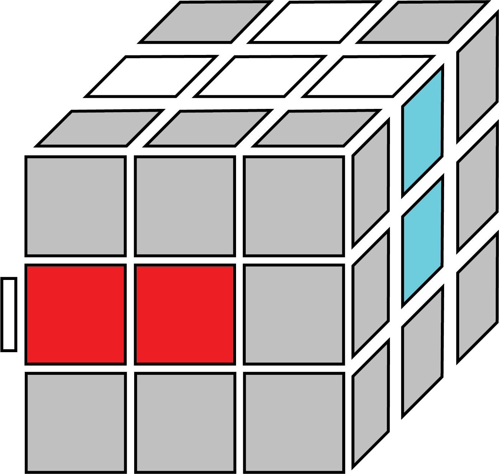

The first step of almost all the different solving methods require us to make a cross with the colour we start on. For simplicity, we are only going to be starting our solves on the white side , to get familliar with the colour scheme of the cube faster. We need to make a cross shape on the white side, with the white coloured edge pieces. You can probably do this without any help, as it is quite intuitive. Make sure that the colour of the edges match the centers directly below them. As shown on the image to the right.
This is a good time to learn intuitively about how the Rubik's turns, and practice manuplating the pieces. See how far you can get without any help. Try to move the edge pieces in without disrupting pieces that are already solved. When forming the cross, remember to only look for white edge pieces, which are pieces with 2 colours on them, with white as one of the colours. The other colour of the piece tells you wbere it should go; a white-blue piece goes on the edge between the white and blue centers. (As shown on the image)
If you need help solving the white cross, read the algorithms below. It is unlikely that using the algorithms will help you to learn the white cross, and you should probably watch a video guide instead. Nonetheless, I will attempt to explain how to finish the white cross using algorithms and images.
Whether you are just stuck on a especially tough edge piece that's oriented wrong, or just have no idea how to even begin solving the cross. Here are some algorithms that may or may not help. Hold the white center upwards, find a white edge piece, and move it to the side that the other colour of the piece is. (In this case, it will be the white-red piece"). Hold the cube so that the non-white colour on the edge is the colour of the side on the front of the cube. Keep in mind that the cross will not already be 3/4ths made when you do these algorithms. Notice how the fourth case is the same as the third, but you just need to first move the piece to the other side with a F2 move.
F U' R U F' R' D' R F2' R' D' R F2' F2 (R' D' R F2')
Here are some simpler cases:
F2  F F' (In case edges are swapped) R' U' R U' R'
Remember: These algorithms should NOT need to be memorized, these are only used to help you learn how to solve the cross intuitively later.
I created the images along with everything else on this page myself, so everything on this webpage is definitely copyright free and free to use. I am adding this to the bottom of every page to show off the fixed position navigation bar on shorter pages, and it also makes the website look more professional.